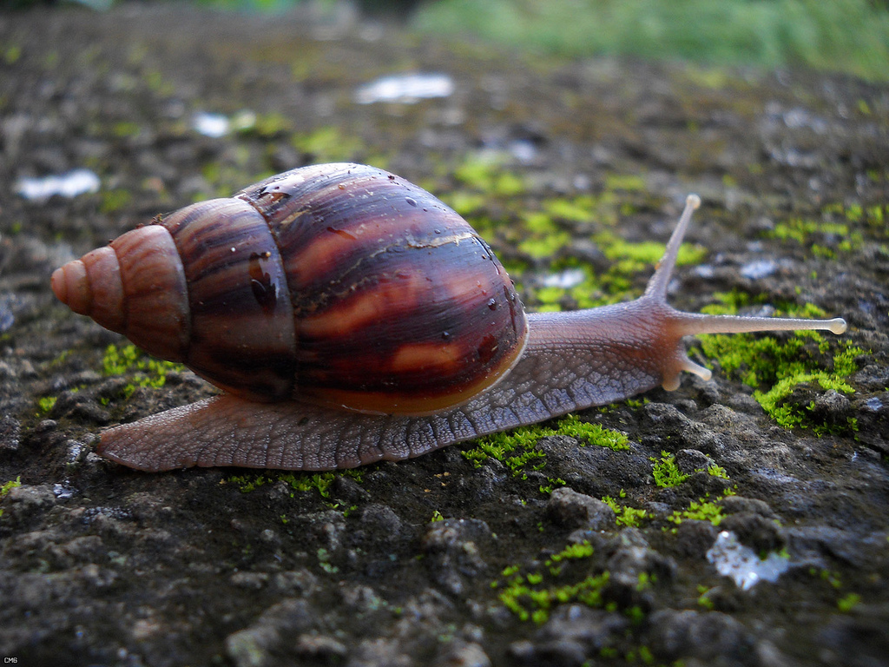

Ахати́на гіга́нтська (лат. Lissachatina fulica або лат. Achatina fulica) або Гігантський африканський равлик — вид наземних молюсків класу черевоногих (Gastropoda) підкласу легеневих (Pulmonata) родини Achatinidae. Найбільший наземний равлик в світі, широко розповсюджений в тропічних і субтропічних країнах, де є сільськогосподарським шкідником. Високоінвазивний вид, лише завдяки суворому карантину змогли запобігти інвазії равлика в США, Японії та Австралії. В країнах Європи з помірним кліматом, зокрема в Україні, виживання виду в природі неможливе, тому ахатина гігантська популярна як домашня тварина.
